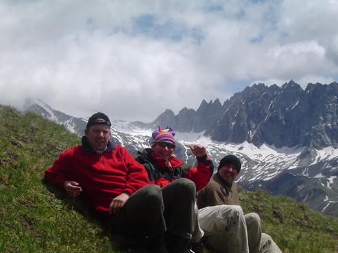

<!doctype html public "-//IETF//DTD HTML 2.0//EN"><html><head><meta http-equiv="imagetoolbar" content="no"><meta http-equiv="Content-Language" content="nl"><meta http-equiv="Content-Type" content="text/html; charset=windows-1252"><meta name="Generator" content="Microsoft FrontPage 5.0"><meta name="ProgId" content="FrontPage.Editor.Document"><title>Valpelline - Val d'Hérens 2</titl<!-- Matomo -->
<script type="text/javascript">
  var _paq = window._paq || [];
  /* tracker methods like "setCustomDimension" should be called before "trackPageView" */
  _paq.push(["setDocumentTitle", document.domain + "/" + document.title]);
  _paq.push(['trackPageView']);
  _paq.push(['enableLinkTracking']);
  (function() {
    var u="https://adsrv.innocraft.cloud/";
    _paq.push(['setTrackerUrl', u+'matomo.php']);
    _paq.push(['setSiteId', '51']);
    var d=document, g=d.createElement('script'), s=d.getElementsByTagName('script')[0];
    g.type='text/javascript'; g.async=true; g.defer=true; g.src='//cdn.innocraft.cloud/adsrv.innocraft.cloud/matomo.js'; s.parentNode.insertBefore(g,s);
  })();
</script>
<noscript><p></p></noscript>
<!-- End Matomo Code --></head>d><body bgcolor="#ffffff" link="#0066ff" vlink="#6633cc" text="#000000" topmargin=0 leftmargin=0 onmouseover="return true" onload="jh()"><script language="JavaScript" type="text/javascript"><!--
function ncm(){return false}function qp(){alert(unescape("Copyrights !  You are not allowed to download pictures - Het ophalen van afbeeldingen is verboden."));return false}function cn(){fg=event.button;if(fg==2||fg==3)qp()}function pq(e){return(e.which==3)?qp():true}vb=document.all;ls=document.getElementById;function jh(){if(document.images){for(zu=0;zu<document.images.length;zu++){if(vb){if(ls){document.images[zu].oncontextmenu=qp}else{document.images[zu].onmousedown=cn}}if(ls&&!vb){document.images[zu].onmouseup=ncm;document.images[zu].oncontextmenu=ncm}if(document.layers){document.images[zu].onmousedown=pq}}}}//--></script> <a name=top></a> <table border=0 cellpadding=0 cellspacing=0><tr><td></td><td></td><td></td><td></td></tr><tr><td width=9 height=9></td><td width=489></td><td width=4></td><td width=4></td></tr><tr><td height=47></td><td width=497 height=47 colspan=3 rowspan=1 valign=top align=left> <table border=0 cellpadding=0 cellspacing=0><tr><td width=496 height=47 valign=top align=left bgcolor=#658c9a> <table border=0 cellpadding=0 cellspacing=0><tr><td width=3 height=3></td><td width=489></td><td width=3></td></tr><tr><td height=39></td><td width=489 height=39 valign=top align=left> <p align=center><center><font face="Arial" color=#ffffff size=3><B>Door Valpelline en Val d'Hérens, tussen Chamonix en Zermatt.</B></font><font face="Arial" color=#ffffff size=4><B><br></B></font><font face="Arial" color=#ffffff size=2><B>&copy; 2004 Peter De Smedt</B></font><font face="Arial" color=#ffffff size=4><B><br></B></font> </td><td></td></tr><tr><td height=3></td><td colspan=2></td></tr></table> </td></tr></table> </td></tr><tr><td height=4></td><td colspan=3></td></tr><tr><td height=34></td><td width=497 height=34 colspan=3 rowspan=1 valign=top align=left> <table border=0 cellpadding=0 cellspacing=0><tr><td width=496 height=34 valign=top align=left bgcolor=#c4cfd4> <table border=0 cellpadding=0 cellspacing=0><tr><td width=3 height=3></td><td width=489></td><td width=3></td></tr><tr><td height=26></td><td width=489 height=26 valign=top align=left> <p align=left><font face="Arial" color=#000000 size=3><B>Deel 2:&nbsp; </B></font> <font face="Arial" color=#000000 size=2>Zondag&nbsp; 11/07/2004</font><font face="Arial" color=#000000 size=3><B><br></B></font> </td><td></td></tr><tr><td height=3></td><td colspan=2></td></tr></table> </td></tr></table> </td></tr><tr><td height=4></td><td colspan=3></td></tr><tr><td height=79></td><td width=497 height=79 colspan=3 rowspan=1 valign=top align=left> <table border=0 cellpadding=0 cellspacing=0><tr><td width=3 height=3></td><td width=489></td><td width=3></td></tr><tr><td height=71></td><td width=489 height=71 valign=top align=left> <p align=left><font face="Arial" color=#000000 size=2>Een inloopdag georganiseerd naar een col ten westen van de Foyer, was de enige mogelijkheid in de buurt.&nbsp; De col lag ongeveer op 2800m, dus gestart op 1476m hoogte in Vaud en 1400m gestegen tot op een andere col, want bij gebrek aan de juiste kaart en beschrijving zijn we ergens verkeerd gelopen.&nbsp; <br></font> </td><td></td></tr><tr><td height=3></td><td colspan=2></td></tr></table> </td></tr><tr><td height=4></td><td colspan=3></td></tr><tr><td height=370></td><td width=493 height=370 colspan=2 rowspan=1 valign=top align=left> <div style="border-style: solid; border-width: 1"> </div> </td><td></td></tr><tr><td height=4></td><td colspan=3></td></tr><tr><td height=106></td><td width=489 height=106 colspan=1 rowspan=1 valign=top align=left> <table border=0 cellpadding=0 cellspacing=0><tr><td width=3 height=3></td><td width=481></td><td width=3></td></tr><tr><td height=98></td><td width=481 height=98 valign=top align=left> <p align=left><font face="Arial" color=#000000 size=2>Voor ons vertrek nog een Nederlander gesproken, die zichzelf natuurlijk beschreef als een expert van het gebied, en ons nog bijkomende aanwijzingen gaf, die ons toch niet geholpen hebben. Het klimmen ging goed, het weer was open en af en toe bewolkt, maar voor de rest goed.&nbsp; Rond 12.00h ergens halverwege de berg gegeten en dan verder tot 2800m.&nbsp; Paar foto's getrokken, gekeken naar de Col waar we moesten zijn en dan afgedaald tot Rey.&nbsp; <br></font> </td><td></td></tr><tr><td height=3></td><td colspan=2></td></tr></table> </td><td colspan=2></td></tr><tr><td height=7></td><td colspan=3></td></tr><tr><td height=370></td><td width=493 height=370 colspan=2 rowspan=1 valign=top align=left> <div style="border-style: solid; border-width: 1"> </div> </td><td></td></tr><tr><td height=5></td><td colspan=3></td></tr><tr><td height=737></td><td width=497 height=737 colspan=3 rowspan=1 valign=top align=left> <table border=0 cellpadding=0 cellspacing=0><tr><td width=3 height=3></td><td width=489></td><td width=3></td></tr><tr><td height=729></td><td width=489 height=729 valign=top align=left> <p align=left><font face="Arial" color=#000000 size=2>Stevige afdaling, die uiteindelijk Marcel de das heeft omgedaan : Het eerste gedeelte ging nog, maar na het stuk over een half verharde weg voor auto's, ging het terug steil bergaf en had Marcel veel last van zijn ontstoken knie.&nbsp; Marcel had gezegd dat wij maar door moesten gaan en hij wel alleen tot in het café van Rey zou geraken.&nbsp; Marc en Peter hebben dan de afdaling verder gezet en waren rond 16.00h in Rey. <br><br>Daar nog een half uurtje gebabbeld met een koppel uit de buurt van Leuven : de man had al veel klimervaring in deze streek en had zijn vriendin meegenomen om een rustige verkenningstocht te maken in de buurt (zij had nog geen echte ervaring in het hooggebergte en zij gingen een stuk van de tour rond de Grand Combin doen).&nbsp; Na een half uurtje arriveert Marcel, hij heeft veel last van zijn knie en begint te twijfelen voor het verdere verloop van de tocht.&nbsp; We gaan een aantal biertjes drinken in het cafeetje in Rey en zijn terug in Vaud rond 17.00h, mooi op tijd om een warme douche te nemen en alles klaar te maken voor het grote vertrek van de volgende morgen.&nbsp; Nu wordt de grote schifting gemaakt in de rugzak (die weegt altijd te veel), dus nu vliegen ook verpakkingen en overbodig plastiek weg (elke gram telt).&nbsp; &nbsp;Ik verkies toch een reservebroek mee te nemen; mijn regenbroek en - vest steek ik als allerlaatste in mijn rugzak.&nbsp; Alhoewel dit wel wat weegt, wil ik toch niet meemaken zoals de laatste dag van de Piz Bernina, twee jaar geleden.&nbsp; "De laatste dag zijn we afgedaald van 3600m tot 1500m in een gigantisch onweer, boven vertrokken met een echte sneeuwstorm die er voor zorgde dat onze gids Gigi alle mensen van de hut op sleeptouw nam in een reuze abseil van 500m met een cordee van 25 man.&nbsp; In de couloir naast de Marco e Rosa hut was er een vast touw, waarmee iedereen gezekerd werd en zo de afdaling veilig kon gebeuren.&nbsp; Op grote hoogte hadden we nog sneeuw in overvloed, maar lager viel de regen met bakken uit de lucht.&nbsp; Gevolg : tot op mijn onderbroek nat, het water stond in mijn schoenen en bij terugkomst in België was mijn gerief nog nat."&nbsp; Voor deze tocht blijkt achteraf, dat ik de regenbroek en - vest geen vijf seconden nodig heb gehad, dus heb ik voor niets 1 kilo extra gedragen.&nbsp; <br><br>'s Avonds bij het eten zijn we in afwachting van onze gids, zou het Paolo of Marin Obert zijn.&nbsp; We kennen alletwee de gidsen van de tour van de Monte Rosa, Paolo heeft ons toen de eerste dag naar de Quinto Sellahut gebracht en daar hebben we gewacht op Marin.&nbsp; Marin kende we goed genoeg van deze tocht, zijn leuze is : "Naar boven dat mag rustig aan, maar naar beneden dat moet vooruit gaan".&nbsp; <br><br>Na het eten zien we de jeep van Marin verschijnen en we weten ineens wie onze gids van de week gaat zijn.&nbsp; Het is wel prettig om deze tocht te doen met een gids die we al redelijk goed kennen en blijkt achteraf dat Marin er ook geen spijt van had.&nbsp; Na een kort gesprekje, Marin is geen spraakwaterval in het begin van de tocht, blijkt dat Marin deze tocht nog nooit gelopen heeft.&nbsp; Hij kent wel een aantal cols, toppen en hutten, maar het grootste gedeelte van de tocht is ook een verrassing voor hem. <br>Na onze voorstelling heeft hij niet veel uitleg nodig voor het materiaal, iedereen weet wat hij nodig heeft en er stellen zich geen problemen.&nbsp; </font><font face="Times New Roman" size=2><br></font> </td><td></td></tr><tr><td height=3></td><td colspan=2></td></tr></table> </td></tr><tr><td height=7></td><td colspan=3></td></tr><tr><td height=30 style="border-top: 2px solid #658C9A"></td><td width=497 height=30 colspan=3 valign=top align=left style="border-top: 2px solid #658C9A"> <table border=0 cellpadding=0 cellspacing=0><tr><td width=3 height=3></td><td width=489></td><td width=3></td></tr><tr><td height=22></td><td width=489 height=22 valign=top align=left> <p align=left><font face="Arial" color=#000000 size=2><B>&lt;- <a target="_self" href="vlg-valp2004-a.html">Deel 1&nbsp;</a> &nbsp; &nbsp; &nbsp; &nbsp; &nbsp; &nbsp; &nbsp; &nbsp; &nbsp; &nbsp; &nbsp; &nbsp; </B></font> <font face="Arial" size="2"> <a href="file:///C:/Documents%20and%20Settings/Joris/Mijn%20documenten/My%20Webs/Hutten/index.html" target="_top"> Startpagina (Home)</a><b>&nbsp;</b></font><font face="Arial" color=#000000 size=2>&nbsp;<B> &nbsp; &nbsp; &nbsp; &nbsp;&nbsp;&nbsp;&nbsp;&nbsp;&nbsp;&nbsp;&nbsp;&nbsp;&nbsp;&nbsp;&nbsp;&nbsp;&nbsp;&nbsp; &nbsp; &nbsp; &nbsp; &nbsp;<a target="_self" href="vlg-valp2004-c.html">Deel 3</a>&nbsp; -&gt;<br></B></font> </td><td></td></tr><tr><td height=3></td><td colspan=2></td></tr></table> </td></tr></table> <a name=bottom></a> <p>&nbsp;</p><p>&nbsp;</p><p>&nbsp;</p></body></html>